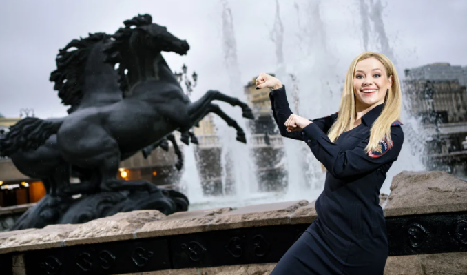
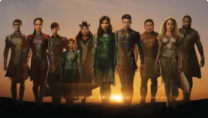
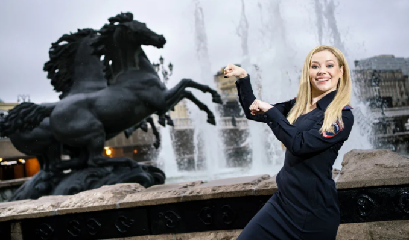
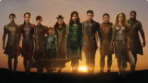
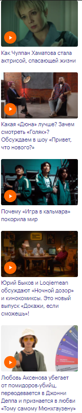
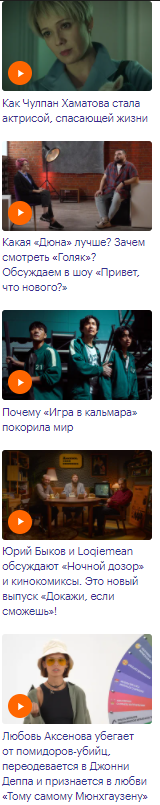

Популярное

1.Что происходит в прокате: «Дюна» не понравилась американцам, а «Веном 2» стал фильмом года в России
2.Алек Болдуин случайно убил оператора и ранил режиссера на съемках. Как это произошло и к чему может привести?
3.«Фильм Marvel, похожий на „Дюну“»: за что ругают и хвалят «Вечных» Хлои Чжао
4.Как познакомить детей с Пикассо и Рембрандтом, чтобы они не заскучали? Через кино!
5.«Кошмар на улице Вязов»: перезагрузка слэшера или культовая драма взросления?
6.Как познакомить детей с Пикассо и Рембрандтом, чтобы они не заскучали? Через кино!
7.«Фильм Marvel, похожий на „Дюну“»: за что ругают и хвалят «Вечных» Хлои Чжао
8.ПодкастРепрессии и кино: как фильмы перерабатывают травмы прошлого. Гость — Леонид Парфенов
9.Sci-fi-сериал «Основание»: почему он лучше «Дюны» (и литературного первоисточника)
10.Дружба со Шварценеггером, звонок Вайнштейна и успех на Netflix: как Александр Невский победил всех
1.Что происходит в прокате: «Дюна» не понравилась американцам, а «Веном 2» стал фильмом года в России
2.Алек Болдуин случайно убил оператора и ранил режиссера на съемках. Как это произошло и к чему может привести?
3.«Фильм Marvel, похожий на „Дюну“»: за что ругают и хвалят «Вечных» Хлои Чжао
4.Как познакомить детей с Пикассо и Рембрандтом, чтобы они не заскучали? Через кино!
5.«Кошмар на улице Вязов»: перезагрузка слэшера или культовая драма взросления?
6.Как познакомить детей с Пикассо и Рембрандтом, чтобы они не заскучали? Через кино!
7.«Фильм Marvel, похожий на „Дюну“»: за что ругают и хвалят «Вечных» Хлои Чжао
8.ПодкастРепрессии и кино: как фильмы перерабатывают травмы прошлого. Гость — Леонид Парфенов
9.Sci-fi-сериал «Основание»: почему он лучше «Дюны» (и литературного первоисточника)
10.Дружба со Шварценеггером, звонок Вайнштейна и успех на Netflix: как Александр Невский победил всех
Главное сегодня

Внимание: андроид в городе! Анна Николаевна исследует центр Москвы

Кого играют Джоли, Хайек и звезды «Игры престолов» в «Вечных»

Внимание: андроид в городе! Анна Николаевна исследует центр Москвы

Кого играют Джоли, Хайек и звезды «Игры престолов» в «Вечных»
Новые видео

